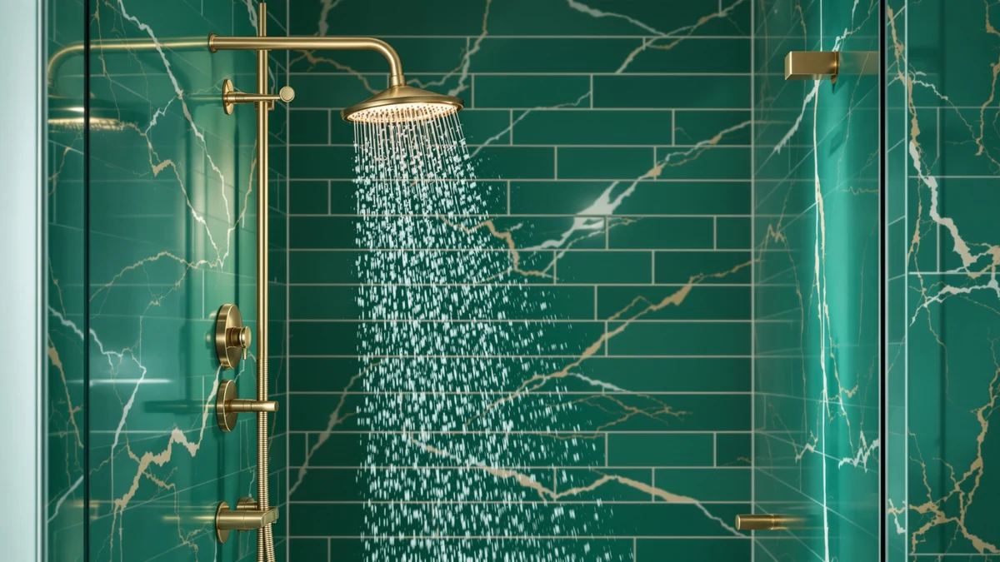

How to Clean Shower Heads At Home: Complete Guide (2026)
Prices and picks verified as of October 2026. Independent, reader-supported reviews.


Things to Know Before You Buy
- Hard water is the main reason a shower head loses pressure, and homes with water hardness above 7 grains per gallon need a deep clean every 4 to 6 weeks instead of every few months.
- White vinegar dissolves calcium and lime scale without harming chrome, stainless steel, or ABS plastic, but it can dull brushed nickel and oil-rubbed bronze finishes if you leave it soaking for more than a few hours.
- A full clean, including the vinegar soak, takes about 45 minutes and costs around $10 in supplies most people already keep under the sink.
- Bleach does not dissolve mineral deposits and can degrade the rubber nozzles and seals inside a shower head, so it should never replace vinegar or a dedicated descaler.
- Removing the shower head from the arm, rather than scrubbing it in place, gets cleaning solution into every nozzle evenly and makes the process faster for anyone learning how to clean shower heads at home for the first time.
Knowing how to clean shower heads at home saves you the cost of a plumber and takes less time than driving to the hardware store for a replacement unit. Hard water deposits build up inside the tiny nozzle holes long before you notice a change in the spray pattern, and by the time the pressure drop is obvious, most of the openings are already partially blocked. The fix does not require special tools or chemicals you don't already have under the sink, just vinegar, a soft brush, and about 45 minutes.
This guide walks through the same five-step process plumbers recommend: remove the shower head, soak it in vinegar to dissolve the mineral crust, scrub what the soak loosens, rinse thoroughly, and reinstall it with a fresh seal. Each step builds on the last, so skipping the soak and going straight to scrubbing leaves hardened deposits stuck in the nozzles instead of softened enough to wipe away. We researched manufacturer maintenance guides and cross-checked them against verified owner reviews to confirm which methods restore full pressure without damaging common finishes like chrome, brushed nickel, and matte black.
What You'll Need
- Supplies: white vinegar, baking soda, and mild dish soap
- Tools: an old toothbrush (or soft-bristle brush), adjustable pliers wrapped in a cloth, and a microfiber towel for drying
Step 1: Shut Off the Water and Remove the Shower Head
Start by shutting off the water supply, either at the shower's dedicated shutoff valve or at the main line if the fixture doesn't have one. Wrap a cloth around the connection point between the shower head and the arm to protect the finish, then grip the shower head with adjustable pliers and turn it counterclockwise until it comes loose. Most shower heads unscrew by hand after the first turn.
Inspect the rubber washer or O-ring inside the connection as you remove it. A cracked or flattened washer is often the real reason behind a leak at the joint, not the mineral buildup you're about to clean, so set it aside and have a replacement ready if it looks worn.
Leave the plumber's tape wrapped around the arm threads in place unless it's torn. You only need fresh tape if it rips during removal or looks compressed beyond reuse.
Step 2: Soak the Shower Head in a Vinegar Solution
Fill a bowl or plastic bag with enough undiluted white vinegar to fully submerge the nozzle face of the shower head, then let it sit for 30 to 60 minutes. The acid in the vinegar breaks down calcium and lime scale without scratching chrome, stainless steel, or the rubber jets most shower heads use today.
Shower heads that haven't been cleaned in six months or longer benefit from the full hour, and small bubbles often form around the nozzles as the vinegar reacts with the mineral deposits. That reaction is a normal sign the soak is working, not a reason to worry about the finish.
If the shower head can't be fully submerged because of its shape, press a vinegar-soaked rag against the nozzle face instead and hold it in place with a rubber band for the same amount of time.
Step 3: Scrub the Nozzles and Clear Blocked Holes
Remove the shower head from the vinegar and rinse it briefly under warm water. Dip a soft-bristle brush or an old toothbrush in the remaining vinegar and scrub each nozzle in a small circular motion. Loosened mineral deposits usually come off as a chalky residue that rinses away easily at this point.
For nozzles that are still partially blocked, clear the opening with a toothpick or a soft silicone cleaning tool rather than a metal pin or paperclip. Metal tools scratch rubber nozzles and widen the holes, which throws off the spray pattern permanently once the shower head goes back on.
If the shower head has a filter screen where it connects to the arm, pull it out and rinse it separately under running water. A clogged filter screen restricts flow just as much as blocked nozzles do, and people often overlook it because it sits out of sight.
Step 4: Rinse Thoroughly and Check the Rubber Washer
Run the shower head under warm tap water for a minute or two to flush out any loosened debris still sitting in the nozzles. Hold it at different angles while rinsing so water passes through every opening instead of just the ones facing the faucet.
Check the rubber washer or O-ring again before you reinstall anything. Replace it now if it looked worn during removal, rather than waiting for a leak to show up later. A new washer costs a few cents and saves you from redoing this entire process in a few weeks because of a drip at the joint.
Wipe down the exterior finish with a cloth dampened with mild dish soap and water to remove any vinegar residue left on the outside. Vinegar left sitting on brushed nickel or oil-rubbed bronze finishes can dull the surface if you don't rinse it off promptly.
Step 5: Reinstall the Shower Head and Test the Spray
Wrap fresh plumber's tape clockwise around the arm threads only if the old tape tore during removal, then screw the shower head back on by hand until it's snug. Finish tightening with the cloth-wrapped pliers, giving it no more than a quarter turn past hand-tight to avoid cracking the threads.
Turn the water supply back on and run the shower for a minute, checking the joint for drips and watching the spray pattern across the full nozzle face. Even pressure across every opening means the soak and scrub worked; a few weak spots mean one or two nozzles need another round with the toothpick.
Dry the exterior with a microfiber towel once you finish testing. A quick wipe-down after every shower keeps mineral deposits from rebuilding as fast the second time around, even between deep cleans.
Common Mistakes to Avoid
Using bleach instead of vinegar is the most common mistake, and also the most damaging. Bleach doesn't dissolve mineral deposits, since the clogs are calcium and lime rather than organic buildup, and it degrades the rubber nozzles and seals inside the shower head over repeated use. Save bleach for mold on the surrounding tile, not for the shower head itself.
Scrubbing with steel wool or an abrasive pad is a close second. These tools leave fine scratches on chrome and brushed finishes that aren't visible when dry but show up as a dull, hazy patch once the shower head gets wet again. A soft-bristle brush handles every nozzle a standard shower head has.
Skipping the soak and scrubbing dry deposits straight off the nozzles is another shortcut that backfires. Dry mineral buildup is hard and bonded to the surface, so scrubbing without softening it first just pushes debris deeper into the opening instead of removing it.
Reinstalling the shower head without checking the rubber washer causes leaks that show up days later and get blamed on the cleaning itself. Inspect that washer every time you remove the shower head, whether or not this cleaning session is the last one for a while.
Our Top Picks
If your current shower head's nozzles are clogged beyond saving, or you're shopping for one that resists hard water buildup from the start, these three options are straightforward to clean and hold up well between deep cleans.

Editor's Pick
Rain Shower Head with Handheld
The magnetic docking handheld and 278-nozzle rain face give you two spray options to flush mineral buildup through, and the detachable head makes a vinegar soak far easier than scrubbing a fixed shower head in place.
$52.99
Check Price on Amazon
Best Value
SparkPod Rain Shower Head 6
Ninety rubber jets wipe clean with a simple finger swipe between deep cleans, and the oil-rubbed bronze finish hides water spots better than polished chrome does.
$37.99
Check Price on Amazon
Premium Choice
High Pressure Shower Head HOPOPRO
Sixty-six nozzles across a compact 4-inch face keep buildup manageable, and the five shower modes let you flush loosened debris out faster during the final rinse.
$18.99
Check Price on AmazonFrequently Asked Questions
How often should I clean a shower head?
Clean your shower head at least once a month if you have hard water, or every two to three months with soft water. If you notice weaker spray or a few nozzles misfiring at odd angles, clean it regardless of how long it has been since the last session.
Can I use CLR instead of vinegar?
Yes, a dedicated calcium and lime remover like CLR works faster than vinegar on heavy buildup, but check it against your finish first. Some commercial descalers etch brushed nickel and oil-rubbed bronze, while white vinegar is safe on every common shower head finish.
Why does my shower head still spray unevenly after cleaning?
Uneven spray after a full clean usually means one or two nozzles are still partially blocked. Re-soak just those nozzles in vinegar for another 30 minutes and clear the opening with a toothpick instead of scrubbing harder, which can misshape the rubber jet.
Is it safe to clean a shower head with bleach?
Bleach isn't a good choice for shower heads. It doesn't dissolve mineral deposits, the real cause of most clogs, and it breaks down the rubber nozzles and seals faster than normal use would. White vinegar or a dedicated descaler removes the buildup without that risk.
Can I clean a filtered shower head the same way?
Remove the filter cartridge before cleaning a filtered shower head and never soak it in vinegar, since the acid destroys the filter media. Clean the housing and nozzle plate with the same five steps, then reinstall the filter once everything is dry.
Verdict
Knowing how to clean shower heads at home comes down to removing the head, soaking it in vinegar, scrubbing what the soak loosens, and rinsing everything before reinstalling it with a fresh seal. The order matters more than the products: soak first, scrub second, and never skip the rinse, since leftover vinegar residue attracts new buildup almost as fast as the mineral deposits it just removed. Once you've run through the five steps a couple of times, the whole process takes well under 45 minutes.
If your current shower head's nozzles are too far gone to save, the BOZYBO Rain Shower Head with Handheld gives you a detachable head that makes future vinegar soaks easier than scrubbing a fixed unit in place, plus a magnetic dock that keeps the handheld sprayer within reach. Whichever shower head you own, a consistent monthly clean keeps every nozzle running at full pressure and saves you from a premature replacement.